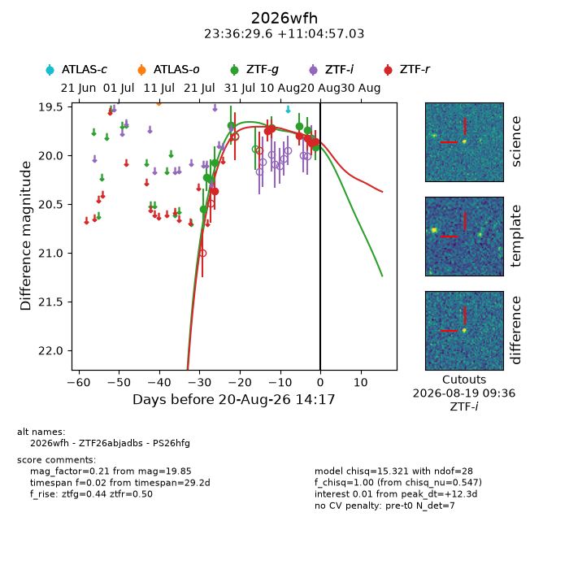
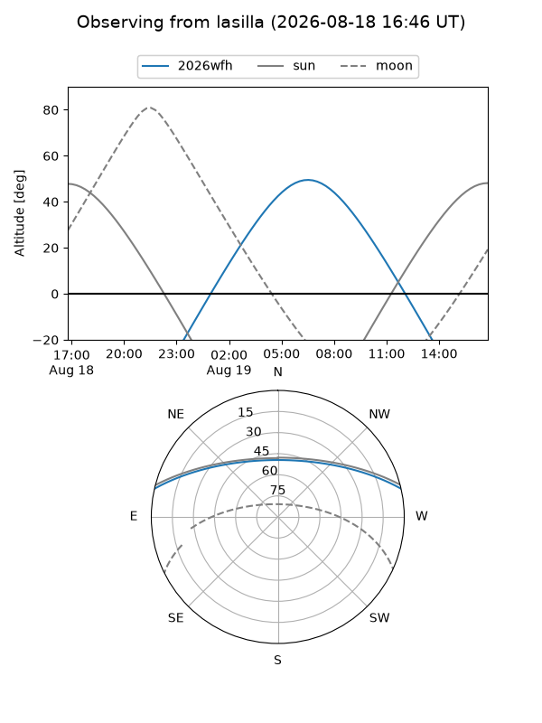
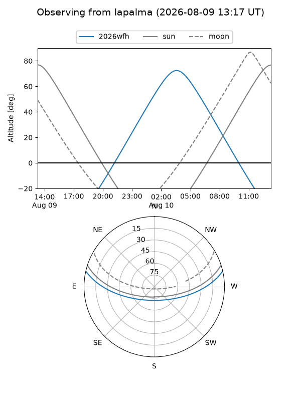
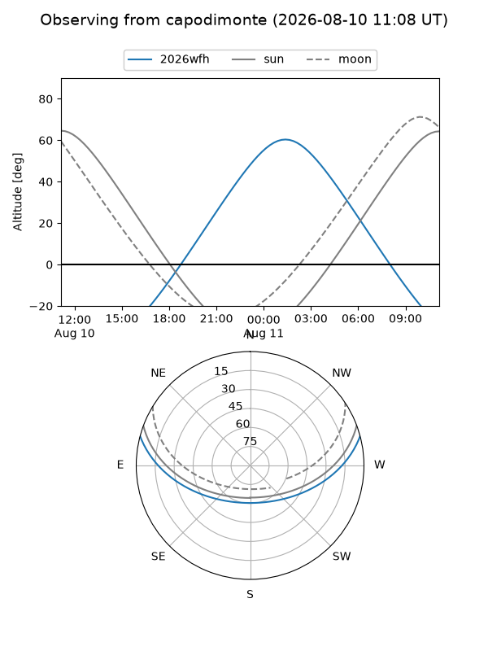
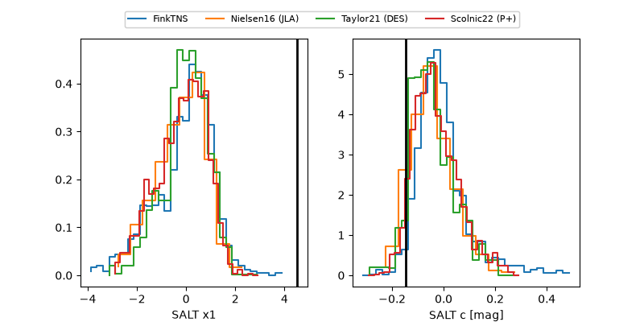

2026wfh
Target 2026wfh at 2026-08-20 14:20
Aliases and brokers:
FINK-ZTF: ztf.fink-portal.org/ZTF26abjadbs
Lasair-ZTF: lasair-ztf.lsst.ac.uk/objects/ZTF26abjadbs
ALeRCE-ZTF: alerce.online/object/ZTF26abjadbs
YSE-PZ: ziggy.ucolick.org/yse/transient_detail/2026wfh
TNS name: wis-tns.org/object/2026wfh
Direct TNS query: direct search
alt names
ZTF26abjadbs (ztf,fink_ztf)
2026wfh (tns,yse)
PS26hfg (panstarrs)
Coordinates:
equatorial (ra, dec) = 354.1232,+11.08251
equatorial (HMS+DMS) = 23:36:29.56,+11:04:57.03
galactic (l, b) = (95.0116,-47.68518)
Flags:
TNS type: nan
peak dt: +12.3
Photometry:
last ztfg=19.92, ztfr=19.85
10 ztfg, 7 ztfr detections
Lightcurve

Visibility



Additional plots
